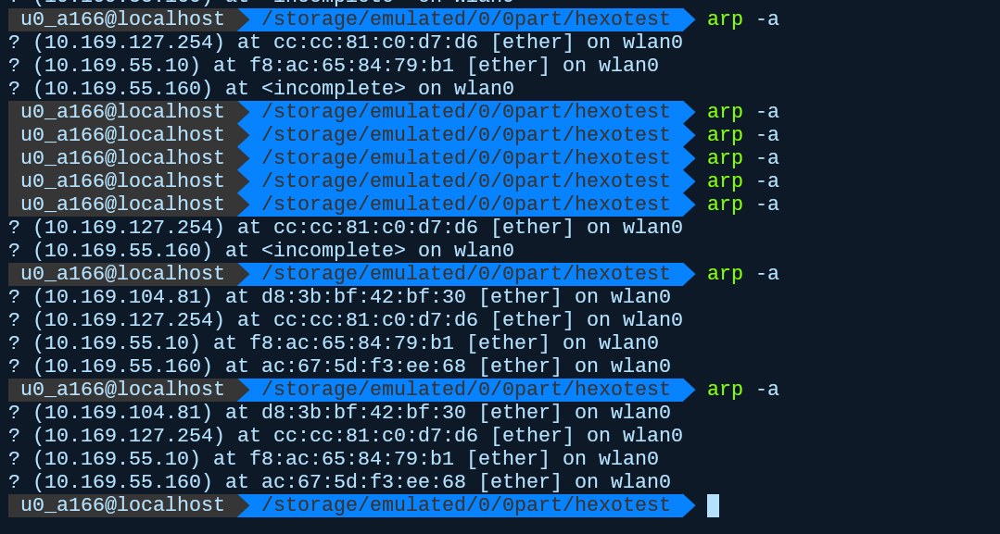

黑客，可怕吗
为了玩玩服务器，前几天，我以学生价花几十块钱，租了一个轻量级云服务器一个月，是一个ubuntu系统的docker镜像，所以性能并不高，本地跑不动的代码，放上去也一样跑不动，不过它给了个公网ip(一般除了服务器云产品都不会有公网ip，准确来说是没必要)，所以有一定的价值，玩玩远程操控，做个云存储还是可以的，它有50G的内存，因为就一个月，我肯定不会把它当云盘，说到底，就是玩玩。我想说的是这样一件事，才没几天，就有这样的消息
在正式内容开始前，稍微讲讲黑客那些事。本人不是什么职业黑客，只是闲着无聊的时候喜欢逛逛像看雪之类的安全论坛，也算是道听途说而知道了一些东西，稍有不严谨也是在所难免的。
攻击对象
硬件层
在研究黑客行为前，我们必需有一个假设，就是硬件层的绝对安全。在OSI网络模型中，硬件层指的是物理层，数据链路层和网络层，IP协议是硬件层的顶端协议，如果使用简化后的TCP/IP模型的话，指的就是IP层和网络接口层。换成一般人能听懂的话就是，要保证给你提供网络宽带的运营商不是黑客的帮凶，因为现在网络使用的是光纤，除了宽带运营商提供的像路由器之类的网关，基本不可能进行流量劫持，嗯，除了Wifi。至于数据解密，说实在的，只要有心去做都是有可能的，除非哪天真能实现量子通信。
总之，我们认为黑客最多只能从软件层面上进行攻击，在软件层面上，有两个可操作级别，操作系统和应用程序，两者应该没有本质的区别，但基于现有的操作系统构架，两者在是有区别的。它们分别是IP层和TCP层(UDP相当于扔垃圾，不存在安全问题)，两者的区别在于增加了端口的概念，在一个操作系统内，所有进程都是内核进程的子进程，内核进程主管IP层协议(window不知道，当linux内核确实是这样)，所有子进程要向网络发送信息，都要以tcp协议的方式发送给内核进程，内核进程将其包装为ip协议包，再路由到网络上去。换句话说，在已有的操作系统上开发程序的话，发送信息的目的地由ip和端口共同确定。
端口是操作系统内核上的一个虚拟概念，由16位二进制数(一个unsigned short)确定，范围由0-65536。其目的其实很简单，就是为了区分不同的通信通道(一个程序可以绑定多个端口)。我们知道对于一个ip地址，我们只有一条网线通道向外部发送信息，但如果我们的电脑上，有多个程序想要互不干扰地与外部通信的话，一个有效的办法就是，在发送的信息开头加上一段信息来区分，这就是端口。
服务器
服务器是黑客攻击的主要对象。在服务端，所谓的服务器就是，一个在公网下，绑定了开放端口的程序。在这里，我们只考虑linux内核的操作系统，通常桌面版的window和mac基本不可能实际用于当服务器(不是不行哦)，一方面是其桌面系统对内存和CPU资源的占用都比较大，而且就服务器本身作用而言，这桌面系统丝毫没有用处。当然window server这个系统还是有些应用的，这是个桌面简化版的window系统，只提供进行服务器管理的UI，对于比较懒的不想使用命令行管理网站的小站长。
linux的程序系统比较特别，一般在window活久的人会把一个窗口认成一个程序，再加一个后台程序加以区分，但在linux的程序指的是一个进程，比如nginx
在这里，我运行了nginx但感觉啥也没发生，其实并非此，我们看到8080端口被开放了
通过浏览器，访问8080端口就可看到服务器提供的http服务了。在linux内，进程以树的结构进行管理，最顶层是内核进程，因为Termux没有root权限，显示不了，但可以那我的云服务器来做例子
nginx和php-fpm是提供http协议服务的，默认绑定的是80端口，sshd提供的是ssh服务，就是我拿来远程连接的端口，默认绑定22端口，systemd就是顶级的内核进程，所谓的后台进程，实际是将本来由当前创建的子进程，交给内核进程来处理，使不处于当前控制台下。
个人设备
个人设备指的是手机，电脑之类的，不接入没有考虑安全的必要，而接入网络，我们往往又处于内网下。这说明什么？说明了，个人设备只有可能引入病毒软件，不可能放在那里就能莫名其妙地被攻击。所谓内网，指的不单单是wifi，我们连接的光纤也是一样的，主要原因是ipv4的地址不够用了，解决方法也很简单，比如NAT端口映射，在一个持有公网ip的路由器上，搭载一个小型的嵌入系统，目的是为了将当前公网的ip+端口，映射为一个内网的ip+端口，这样想要向本地写入信息，只要向公网ip+端口发送信息就可以了，而端口大部分时候都是用不完的，而且一部设备也不可能开放一堆端口来对外通信，因为宽带是有每秒的流量限制的。其实如果是固定映射，攻击是有可能的，但现在内网使用的都是动态地址分配，如果感受不到的话，可以拿wifi模拟一下。动态分配表示地址并不稳定，而且我们并不知道向这个端口的后面是什么，应该写入什么信息，很容易就会被网关视为无用信息而直接丢包。
真正可能有危险的是恶意软件，比如默默地在后台大量使用CPU和网络流量来偷偷与外部通信。虽然外网找不到我们，但是我们可以找过去，在本地我们连接公网设备时，可以由系统完成握手过程，建立连接。其实，我想表明的是，这类似于黑暗森林的法则，内网的安全来源于，别人无法在互联网上找到你的地址，就没有攻击的说法，但如果你有一个本地程序，向公网说，我在这里，那么定位到你就不成问题了。熟悉网络寻址的可能知道，互联网的寻址实际是广播的方式，它向所连接的所有路由器设备寻找你连接着这个地址吗？这样反复的广播下去，路由器上有一张缓存表，记录着所连接的设备，而且是随时更新的，主要是连着内网的路由器。
一般的程序没有系统管理员权限，只要一删除，它啥也干不了。比较难受的是window系统，一般人使用的时候都不会去设置管理员密码，不知运行程序的时候有没有这样一个现象，就是周围突然一黑，只有一个窗口询问你是否要运行程序，这实际是程序在寻求管理员权限，将程序安装到系统目录，这是必要的，但谁知道程序拿到权限后干什么呢？不过也没啥好怕的就是了，window的管理员权限没有linux的root厉害，顶多给你弹窗，找不到软件在哪，改改注册表之类的问题，具有一定计算机知识的人都可以自主定位排查，没什么好怕的。
局域网(Wifi)
在网络安全的教育中，他们都会告述你不要乱连公共场合的wifi，这确实有一定道理。其实wifi和一般的光纤内网在通信上没有本质的区别，区别只是信息传递的方式，wifi是无线传播，光纤是有限传播。wifi的危险性来自于个人对其有操作性，相当于wifi的提供者充当了网络提供商，这里的风险与我之前所说的物理层的风险是一样的，关键在于攻击方有没有精力去解密。当我打开wifi热点的时候
实际打开了53端口，在公网下，这是用于dns域名解析服务器的端口。而在wifi内网下，用于与所连设备建立通信，再来看一个现象
我们看到53端口，使用udp和tcp两种协议，而外部扫描到tcp协议。实际上，我们连接wifi的时候，是与wifi网关建立tcp协议通信，但是我们怎么扫描到wifi呢，实际上是wifi在不断向周围投放基于udp协议的包，手机则有特殊的wifi模块来识别这些包，从而确定到这个设备。无线通信不同于有线通信，无线需要依赖于广播和过滤，我们身边其实有接近无限的广播信号，手机通过过滤找到确实是发给我们的信息并接收。无线通信其实是物理层面不安全的，而且wifi还建立在ip协议之上，所以衍生了一种十分恶心的攻击方式，arp欺骗，arp协议虽然在物理层之上，主要为了在广播信息中记录mac地址与ip的对应，可以通过指令查看
这是经常变的，并不是很稳定，这是利用物理层上的漏洞，本质和作为wifi提供者进行流量拦截是同样的行为。一旦获取端口，就可以在本地可以编写代理程序来进行流量拦截，得到的是处于ip协议层的数据，至于怎么去解析，那不是我干的事了。
攻击目的
进行网络攻击的一个主要目的是获取信息，或是单纯地搞破坏。为什么要考虑目的，因为目的才能决定我们的做法，更重要的是从原理上考虑其可能性。搞破解，搞逆向，搞攻击之类的，必须时刻记住，要了解其原理，而不是胡乱套工具，人是在不断进步的，安全也是一样的，了解常用的攻防手段，可以很快地帮我们找到思路。
资源获取
这里指的是公共服务器的资源，对于躲在黑暗森林里的设备，一是我们不知道它有什么资源，二是定位ip十分困难，所以真正危险的是处于公共视野下的服务器，对于我们的个人设备并不用当心这么多。
想要隔着网线获取到服务器的数据，或者是服务器端设备上的数据，直接从物理上偷走硬盘是最简单粗暴的办法，不过现在的绝大多数服务器都处在比较偏远的地方，而且这是小偷的行径而不是黑客的行径，黑客应当从软件层面上进行攻击。在软件上，我们可以做什么呢？很简单就是向ip+端口写入数据，而且端口必须是开放的，对于往封闭端口写入的数据会直接被内核丢包。如果系统的运行就是这样有去无回的话，又或者服务器不存在开放端口的话，安全问题是本质不存在的。但服务器的作用却要求了，它不能像个人设备一样封闭所有端口，如果提供http服务，需开放80端口，如果提供ssh服务，需开放22端口，当然还有更多，这样就达成了一个前提。其次服务器的作用要求了端口对数据的交互性，我向你发送一个http请求，你当然得回应我一个页面吧，不然你这服务器的意义何在，这样就达成互动的前提。就算如此，你可能觉得，我们发送的信息都要求固定格式，完全受限又怎能做出大事呢？所以问题其实出在绑定在这个端口的软件上，不过嘛，其实操作系统也可能出现一些问题，不过概率比较小。
比如80端口，绑定提供http的服务器，拿nginx举例，它是一个典型的反向代理服务器，这是什么意思呢？这实际上和运行权限相关，nginx一般不会以root权限运行，除非你不考虑安全问题。这样存在nginx权限无法访问的文件，但是当前页面又需要这个数据，那么怎么做呢？在本地或者内网，运行一个可以读取文件权限级别的程序，并将ip映射为内网访问，内网数据传输没有权限，这样nginx就可以获取相应的数据，而无需在相应的系统级别。但然反向代理还有其它作用，比如代理php服务，nginx无法处理php请求，于是反向交给本地的php服务来处理。由于http服务器的运行权限级较低，只能通过不同参数来实现如代码注入的事情，比如sql注入，php注入，这往往是程序员懒得做参数检验，有或者前后端不分离才可能出现的问题。漏洞的根本在于回应请求的软件，是否存在某些特殊参数的处理机制。
比较可怕的端口是22，端口22提供ssl服务，即远程连接服务，对于一般架设于远处的服务器，管理员需要通过此服务远程操作，所以也没办法关掉。openssl是一个开源的软件，白客可以寻找漏洞并修补，黑客也可以寻找漏洞并攻击。有人可能会觉得自己开发一个远程连接程序不就可以了，确实，程序可以改，加密可以改，但是通信协议改不了，而且有时花大量精力开发，没有群众来寻找漏洞，反而更容易被发现漏洞，我们还是会到ssh吧。ssh的运行级别是很高的，对于linux而言，你相当于站在电脑前面，ssh的连接过程比较简单，用户加ip再输入密码就可以连接，密码以信息摘要的方式存在本地，碰撞出结果的概率很低，通信过程使用非对称加密，看起来确实很安全，简直没什么可操作的余地，但问题往往都是你想不到的，我们等下再说。
资源占用
拿电脑跑高计算量的程序当然不太可能了，个人电脑的性能本身就不如服务器基本的设备，而服务器级别主管计算的往往处于服务器内网，外网一般负责交接，比较难盗取到计算资源，而且计算往往用于科研，科研一般有自己的计算资源，并非什么刚需，真正刚需的是下载服务。网盘、迅雷等之类的下载软件，都使用了一种p2p的下载技术，大家都略有耳闻，就是让下载的用户之间互相传下载进度，内网用户之间互相寻找到对方地址比较困难，特别内网用户的ip地址还是动态分配的，而且中国的运营商限制一般用户上行宽带速度，我们一般也不会做向远处传大文件，上传速度不会远超下载速度还是比较合理的，这样还省了硬件成本。用户间的寻址依赖于track服务器，主要记录连接用户地址和传输基本信息，有人可能会告诉你没有公网ip就别想用传统的p2p，更准确来说是没有静态的ip映射，公网ip早就不够了，又有那家公司会随便的给你。传统的p2p，对于不同的ip+端口，它会将其视为一个新的用户，p2p的精神是共享越多下载越快，而动态ip分配会导致共享内容随时清零，获取不到下载速度，而且运营商会妨碍不同内网直接的通信，从而保证所谓的“安全”。而新生非网盘、迅雷等的技术有所不同，通过引入用户机制，不断地追踪动态的用户地址，并且使用自己修改过的track服务器，为会员用户提供更高质量的服务，而且还通过不断扩大用户群体，来壮大p2p的阵容。你可能觉得改track服务器不就可以了吗？并不能，传统的p2p是全球性的传输，谨遵p2p精神相当于全网公约，就如同通信协议一样，乱改的话还怎么交流，当然像网盘，迅雷之类的开辟一条符合中国国情的道路也是可以的。
所以系统资源的占用发生在自己将软件引入系统，不会有什么软件莫名其妙就安装到你的系统上，当然这不包括后台安装，在安装某个程序的时候，它帮你在后台安装一堆其它软件，比如××下崽器。至于本地资源的盗取嘛！对于没价值的存在，耗费那么多尽力，实在有些不值得。真正讨厌的，还是有些软件不断地在本地收集信息并发送到服务器去上，只要你还在用这个软件，它就停不下来，在国外它可能需要询问你，因为这是要打官司的，在国内嘛！不太清楚，反正跟黑客没啥关系，都是正版官方的软件，怕啥？反正，我只敢把它们安装到虚拟机上去。
浏览器安全
除非你的浏览器有问题，不然浏览网站就能让设备中毒简直是无稽之谈，网站的浏览本质是在浏览器内核上运行的程序，相当于一个小型的虚拟机，处于隔离环境下。唯一有问题的是http请求中所包含的cookies信息，这是网站中记录下次免登陆的信息用的，一般情况下cookies信息会绑定相应的网站域名，不在非官方网站输入信息其实也没啥好怕的，连官网都识别不了，只能怪你自己的安全意识差到了极点。
实际看看
回到我们最开始的两个东西，来源于openssl的两个漏洞，这时我们还应该意识到一点，本地可以扫描到漏洞，外部也一样可以扫描到。黑客大概存在两种级别，一种是专门利用工具和已有的研究成功，攻击那些抱侥幸心理懒得修复的站长，另一种就是在扫描不到已知漏洞的情况下，去研究程序，从原理上寻找可能可以攻击的点。
缓存区溢出漏洞
我们可以看看官方的描述
为了解密 SM2 加密的数据，应用程序通常会调用 API 函数 EVP_PKEY_decrypt()。一般情况下，一个应用程序将调用这个函数两次。第一次在进入时，“out” 参数可以是 NULL，而在退出时，“outlen” 参数填充了为容纳解密明文所需的缓冲区大小。然后，应用程序可以分配一个足够大的缓冲区，并再次调用 EVP_PKEY_decrypt()，但这次为 “out” 参数传递一个非 NULL 的值。
SM2 解密代码实现中的这个漏洞意味着第一次调用 EVP_PKEY_decrypt() 并计算出的容纳明文所需的缓冲区大小，可能要小于第二次调用时实际所需的大小。因此当应用程序第二次调用 EVP_PKEY_decrypt() 时，就可能导致缓冲区溢出。
恶意攻击者如果能够向应用程序提供 SM2 内容进行解密，就能导致攻击者所选择的数据溢出缓冲区，最多可溢出 62 个字节，从而改变缓冲区后其他数据的内容。进一步改变应用程序行为或导致应用程序崩溃。
总结一下就是，ssl程序对缓存的处理方式不当，导致溢出的数据，占用程序占用程序的运行内存，而这段数据可以通过远程发送过来，而openssl的运行级别较高，运行内存数据中可能存在下一条运行的指令，从而改变程序的行为。这里说的只是原理，真正实现起来是挺困难的。
拒绝服务漏洞
我们直接来看介绍，反正我也看不懂
该漏洞是由于证书解析时使用的 BN_mod_sqrt() 函数存在一个错误，它会导致在非质数的情况下永远循环。可通过生成包含无效的显式曲线参数的证书来触发无限循环。由于证书解析是在验证证书签名之前进行的，因此任何解析外部提供的证书的程序都可能受到拒绝服务攻击。此外，当解析特制的私钥时(包含显式椭圆曲线参数)，也可以触发无限循环。攻击者可利用该漏洞对使用服务器证书的TLS 客户端、使用客户端证书的 TLS 服务端、托管服务提供商从客户那里获得证书或私钥、证书颁发机构解析来自订阅者的认证请求、解析 ASN.1 椭圆曲线参数的任何其他内容、引起拒绝服务 (DoS) 攻击。
其实都是看不懂的，我们需要回到我们的主题，黑客到底可不可怕。首先对于已知的漏洞，升级程序是最好的解决方法，漏洞的根本其实都是程序某些处理代码让人发现了可乘之机。那未知的漏洞和风险呢？对于个人而言，不乱安装软件就是最好的办法，因为只有程序才能在本地运行，从而获取相关数据，比较难受的是有些人喜欢隐藏后缀名，通过图标来识别程序，导致将程序误认为图片，这只能说缺乏安全意识，还有就是程序的运行级别，在搞清作用前，不用乱给管理员权限。
真正需要考虑安全问题是站长之类的人，但也轮不到我来操心，就我这安全水平，实在差的太远了。我想说啥呢？黑客并不可怕，一旦失去了在内部接应的程序，他们什么也做不了，可怕的是缺乏安全意识的自己，在无意识之间引狼入室。